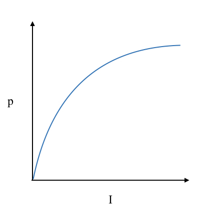
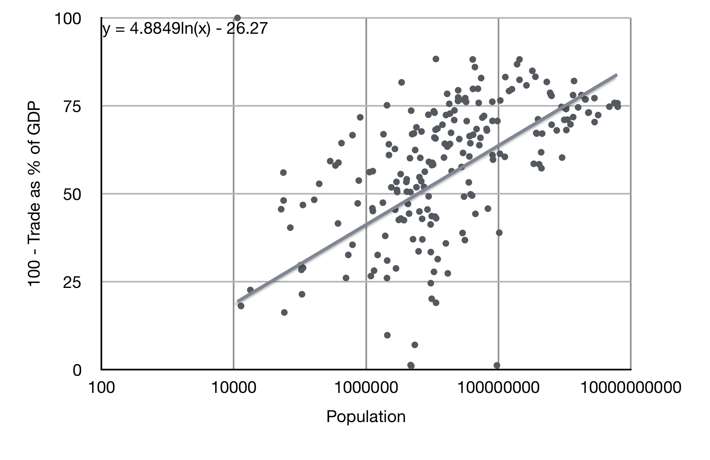
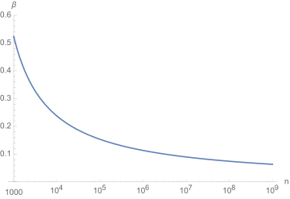
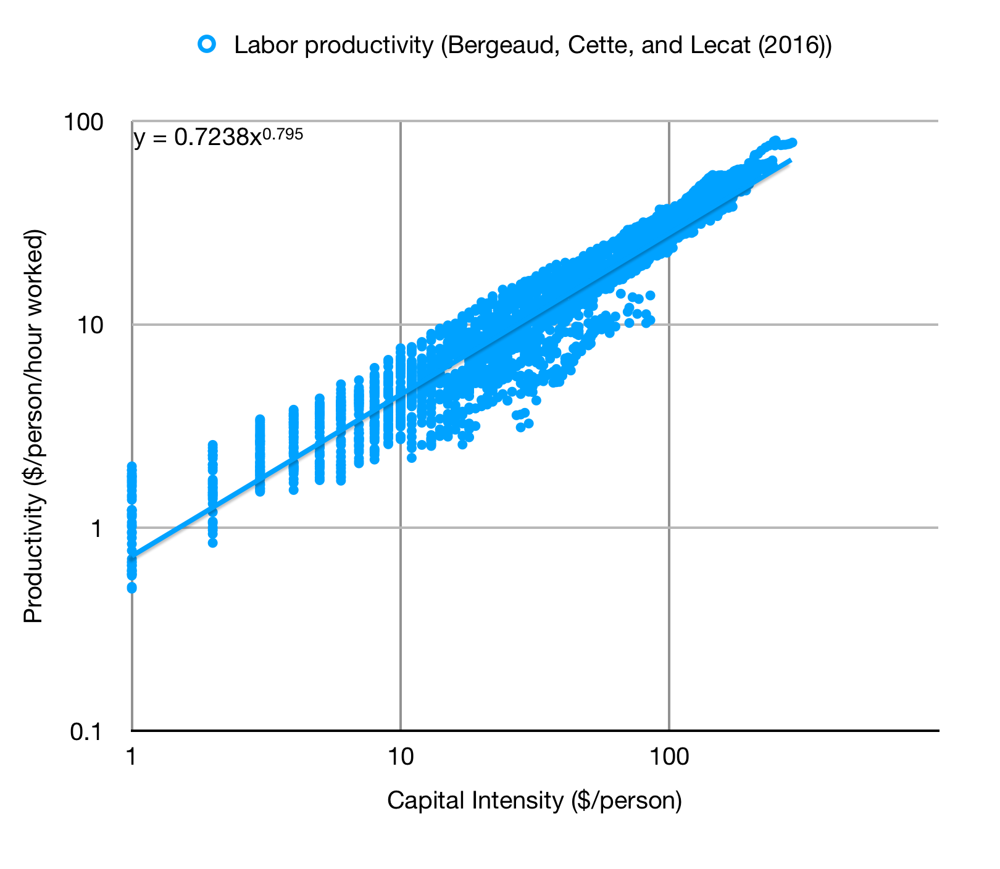

Growth and Population on Mars
Dec 7, 2020 11:33 · 1438 words · 7 minute read
Economies of Scale
I previously wrote about a simple model of an early Martain economy. A key input to that model is the way that human productivity scales with population and investment. I captured this with the simple scaling $$ p \propto I^\alpha n^\beta $$ for $\alpha,\beta > 0$. This relation says that the per-person productivity $p$ scales as some positive power $\alpha$ of the per-person investment $I$, which could reflect machinery or materials or personnel support from Earth, and as another positive power $\beta$ of the number of people $n$.
It’s clear why more machines and materials improve productivity, but why does population help? As anyone who has assembled furniture knows, having a second person to hold pieces while you apply glue makes a huge difference, and can cut assembly time by more than half. Two people together are much more than twice as productive as two isolated individuals. This insight translates mathematically into the statement that $\beta > 0$: more people means more productivity per person.
In my previous post I discussed two limits: one in which $\alpha \gg \beta$, meaning that it’s much more important to invest heavily in each person than to scale up the number of people, and one in which $\alpha \ll \beta$, meaning that it’s much more important to scale up the number of people. Which limit applies really matters for determining how to invest in the Martian economy.
Here I want to understand what sets $\alpha$ and $\beta$ and try to estimate them at different stages of growth. I’ll do this by very naively extrapolating from economies on Earth and then considering ways in which Mars could be different.
Diminishing Returns
Unfortunately (1) above is very much a simplified model. In reality productivity hits diminishing returns to both investment and population. Having a screwdriver is very helpful. Having a kit of different screwdrivers helps, but not as much as the leap from zero tools to one, especially because a screwdriver that doesn’t quite fit can still do the job in a pinch. This means that $\alpha$ is not really a constant, and should decrease as $I$ increases.
This is shown in the image below: increasing investment increases productivity, but it then takes even more investment to produce the same increase in productivity.
The same is true of population. Going from one person to two is a real help with many tasks. Going from two to four helps again, but not as much. Fewer tasks benefit from four people than from two. And so on up to billions. So $\beta$ decreases as $n$ increases.
Population Scaling
How does productivity scale with number of people? Increasing population increases productivity in a few ways:
- Certain tasks require simultaneous action, like assembling large structures.
- Fixed costs can be spread over more people. Think of sharing cell towers.
- People can specialize more. This is part of why cities have high productivity: density allows for increasing specialization and matching between skills and jobs.
These three improvements are important at different scales. Many tasks require one, two, or even five tasks simultaneously, few require as many as 100. In the US most construction companies are small, with fewer than 10 people. Less than 0.1% have more than 500 people. Building a home in the US takes roughly 30 people actually working on the house, all told, and most of those aren’t doing tasks that need to happen simultaneously. So there are big gains from enabling simultaneous work early on, but these diminish as the population rises past, say, 100 people able to do a task.
Spreading fixed costs pays off over a much wider size range. Cities make much more use of their roads and plumbing than towns, and accordingly pay less per capita for this infrastructure. The same is true of cell towers, fiber optic cables, GPS satellites, and so on.
Likewise, the gains from specialization are important over a huge range in population. As Casey Handmer points out, Iceland trades more than 4000 categories of goods with other countries, reaping the benefits of specialization across the whole globe on the scale of billions of people. This is typical even for larger countries: US trade statistics list hundreds of categories, most of which are extremely broad (“Chemicals-organic”), accounting all told for more than 10% of GDP.
To get a sense for the gains from specialization, I’ve plotted a crude measure of the fraction of consumption that each country supplies domestically, namely $100\times (1-{\rm Imports}/{\rm GDP})$, using the World Bank’s 2017 data. I’ve left off countries which import more than 100% of GDP. You can play with the raw data here. The important feature is that with increasing population countries produce an increasing fraction of what they consume.
Cut off from trade, that does not mean consumption would fall by the fraction in the plot, as other parts of the economy would adapt to produce more locally, but unless those elasticities are very high we should be able to estimate the scaling of the drop. It probably is true that a country like Iceland, with 350,000 people, would experience a substantial drop in quality of life if cut off completely from trade, and the measure I’ve plotted, suggesting a 60% drop, seems plausible.
The line running through the data is a logarithmic fit, meaning $y = A \ln x + B$. The large slope of ~5% says that for every 10x increase in population a country can produce roughly 10% more of its consumption domestically, and that holds across the wide range from $10^4-10^9$ people. The very rough implication is that, for the current level of technology on Earth, ability to produce the variety of products in the modern economy goes up 10% per 10x increase in population, up to a maximum of ~80% for the largest countries. Translated into Martian productivity, that suggests that $$ p \propto 0.05\ln n - 0.26, $$ meaning that the importance of raising population declines with increasing population. On the margin I can estimate an effective $\beta$ from this by letting $$ \beta \approx \frac{d\ln p}{d\ln n} \approx \frac{1}{\ln n - 5} $$ I’ve plotted this formula below. It breaks down badly for small populations with $n < e^5 \approx 150$, well below the country data I fit to, but for larger populations it gives an estimate $\beta$ for countries on Earth. A Martian economy could be different because in the beginning it will rely on very specific industries that could well have different scaling, but this at least gives me a starting point.
Investment Scaling
Next I want to know how productivity scales with investment. There’s good data on this. Below I’ve plotted labor productivity in 2010 PPP dollars per person-hour worked as a function of capital intensity for 17 countries over the span from 1890-2015.
The trendline shows that this is well-fit by a power law with a constant $\alpha\approx 0.8$. There are no diminishing returns! What happened? First, a lot of population growth happened, and that could be masking diminishing returns. Secondly, and probably more important, lots of new technology emerged over this period! That increases productivity without requiring more capital per person, allowing constant returns on investment despite increasing investment per capita. So while developing countries can initially achieve 10+%/year growth rates by increasing their capital stock, eventually that growth slows to the 2-3% growth rate of developed nations.
So does Mars hit diminishing returns on investment or not? By analogy with developing countries, it seems likely that there will be a period of huge returns because Mars is initially so capital-poor. The Martian economy will also involve substantial new technology, so innovation may well keep returns high, at least as high as terrestrial returns. This suggests that if returns diminish, they will do so from a very high baseline, and that the terrestrial $\alpha\approx 0.8$ is probably a lower bound for Mars.
Big Picture
By wildly extrapolating from Earth’s economy I found that $\alpha \geq 0.8$ while $\beta$ is initially $0.5$ and declines with increasing population. Taking these figures at face value suggests that so long as $n > 10^4$ (the limit on the data I could fit to), Mars is in the limit where capital matters more than population. Adding more people speeds up growth, but not as much as throwing more machines and tooling at the same number of people.
There are limits to this, of course. Barring substantial developments in AI, throwing more and more hardware at a small group of people will eventually saturate their ability to manage it. In the beginning though, the Martian economy will need tooling more than people.